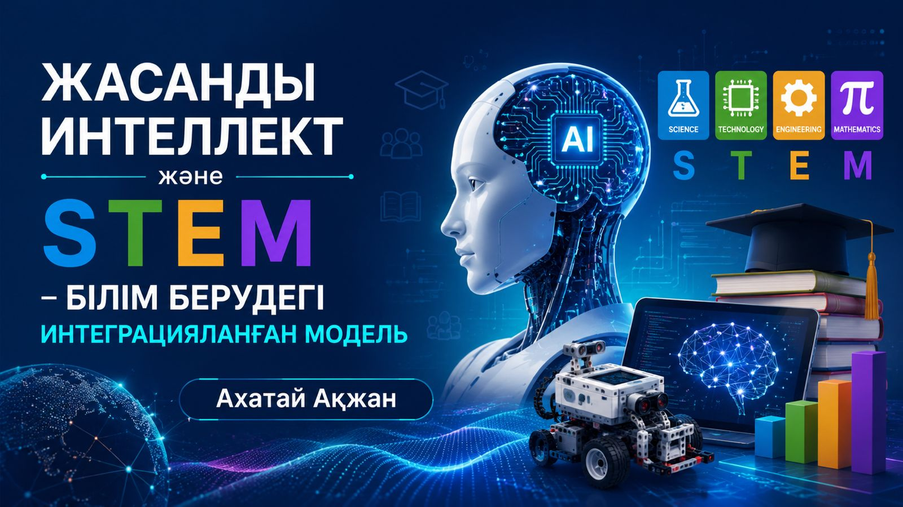

«Жасанды интеллект және STEM – білім берудегі интеграцияланған модель» курсының мақсаты STEM технологиясының тиімді әдістерін қолдана отырып, жаратылыстану бағытындағы пәндерді оқытуға қажетті жаңа әдістерді меңгерген пән мұғалімдерін және практикалық дағдылары бар білікті мамандарды дайындау болып табылады.